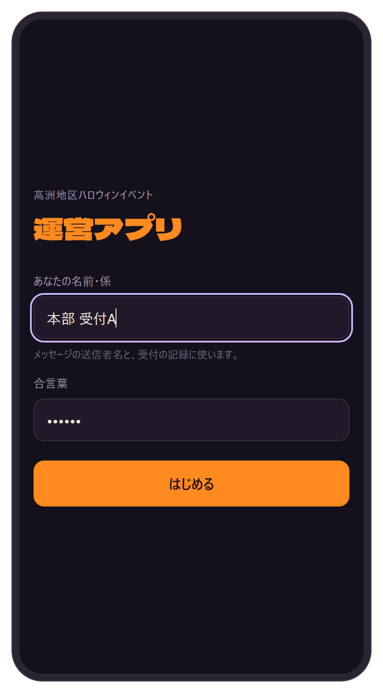
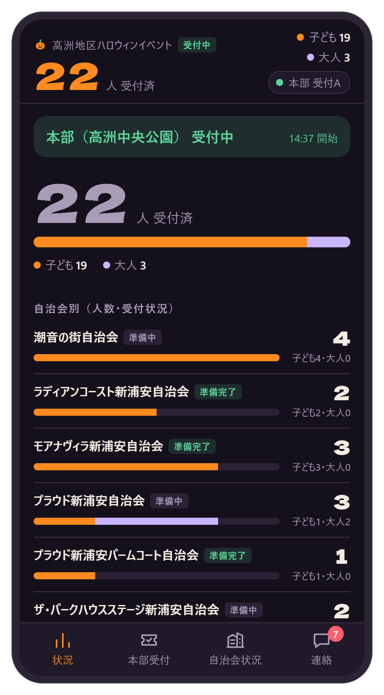
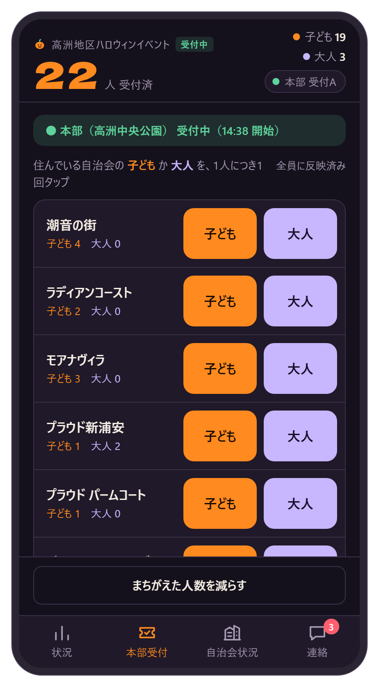
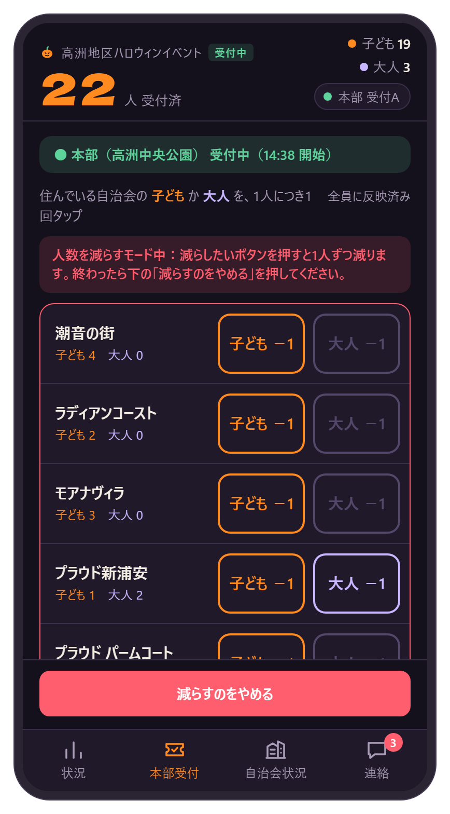
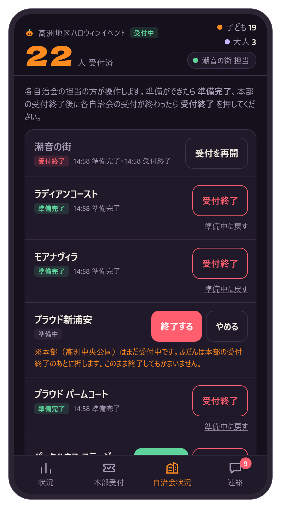
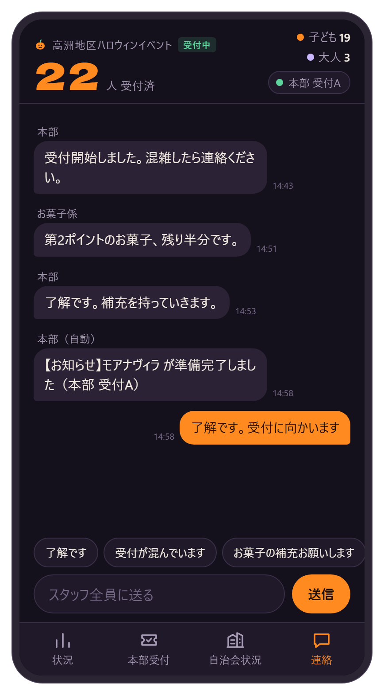
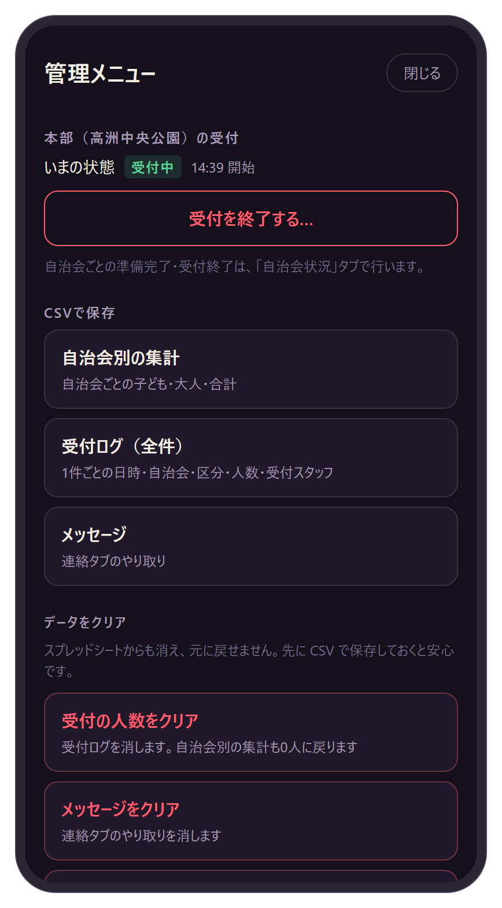
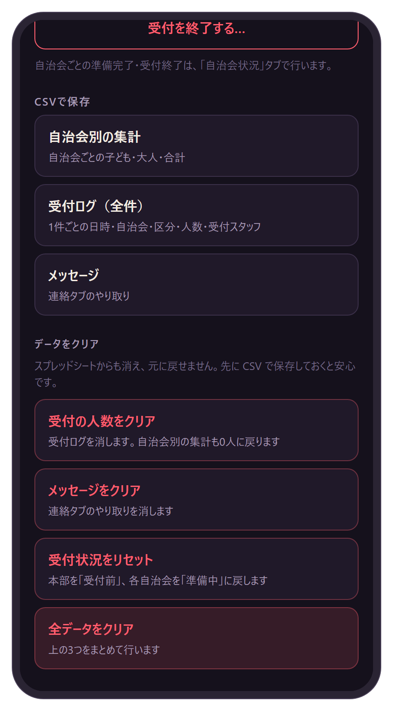

このアプリは、当日の受付人数と受付の状況を、運営スタッフ全員のスマホでリアルタイムに共有するためのものです。インストールは不要で、配られた URL をスマホで開くだけで使えます。
| 画面（下のタブ） | できること |
|---|---|
| 状況 | 本部の受付状況、受付した人数（合計・自治会別）、各自治会の準備・受付の状況を見る |
| 本部受付 | 本部（高洲中央公園）で、来た人を自治会別に数える |
| 自治会状況 | 各自治会の「準備完了」「受付終了」を知らせる |
| 連絡 | スタッフ全員でメッセージをやり取りする（LINE のグループのような使い方） |
自分の役割のところから読んでください
1はじめて開くとき
全員

- LINE で配られた URL をタップします。 https://regiusfort-design.github.io/takasu-halloween/?openExternalBrowser=1
- あなたの名前・係 を入れます（例：「本部 受付A」「潮音の街 担当」）。メッセージの送信者名と受付の記録に使います。
- 合言葉 を入れます。合言葉は本部から別に連絡します。
- はじめる を押します。
2回目からは、名前と合言葉を入れなくても開けます。
ホーム画面に追加しておくと便利です
- iPhone（Safari）：画面下の共有ボタン（□に↑）→「ホーム画面に追加」
- Android（Chrome）：右上の「︙」→「ホーム画面に追加」または「アプリをインストール」
かぼちゃのアイコン「高洲ハロウィン」が追加されます。iPhone ではホーム画面から開いたときに、もう一度だけ名前と合言葉を入れてください。
2画面の見かた
全員

画面のいちばん上（どのタブでも表示）
- 大きな数字：本部で受付した合計人数。右に子ども・大人の人数。
- ラベル：本部の受付状況 受付前 受付中 受付終了
- 名前のボタンの ● ：緑はつながっている、赤は電波が弱くつながっていない状態です。
状況タブ
- 一番上の帯：本部（高洲中央公園）の受付状況。受付が終わると赤く「本部（高洲中央公園） 受付終了」と表示されます。
- 自治会別：人数の棒グラフ（■子ども ■大人）と、各自治会の状況 準備中 準備完了 受付終了
- 最近の受付：だれが、いつ、どの自治会を受付したか。
表示は約3秒ごとに自動で新しくなります。
3本部受付（人数を数える）
本部（高洲中央公園）の受付担当

- 下の 本部受付 タブを開きます。
- 来た人に住んでいるマンション（自治会）を聞きます。
- その自治会の 子ども か 大人 を、1人につき1回 タップします。家族4人なら4回です。
- 参加自治会以外の人は その他・地区外 の行で数えます。
タップするとボタンに「+1」と出て、数秒で全スタッフの画面に反映されます。
送信の状態（画面右上の小さな文字）
| 表示 | 意味 |
|---|---|
| 全員に反映済み | すべて送信できています |
| 送信中 ○件 | 送っているところです（すぐに消えます） |
| 未送信 ○件・再接続中 | 電波が弱く、まだ送れていません。つながると自動で送られます。このあいだはアプリを閉じないでください。 |
まちがえて押したとき

- 画面下の まちがえた人数を減らす を押します。
- ボタンが 子ども −1 大人 −1 に変わり、上に赤い帯が出ます。
- 減らしたい自治会・区分のボタンを押すと、1人減ります。
- 終わったら 減らすのをやめる を押します。
- 20秒間なにもしないと、自動で元に戻ります。
- 0人のところは減らせません（ボタンが薄くなります）。
- ほかのスタッフが数えた分も減らせます。減らした記録は残ります。
4自治会状況（準備完了・受付終了）
各自治会の担当

- 下の 自治会状況 タブを開き、自分の自治会の行を探します。
- 自治会の準備ができたら 準備完了 を押します。
- 本部の受付が終わったあと、自治会での受付が終わったら 受付終了 を押し、続けて 終了する を押して確定します。
- 状況は 準備中 → 準備完了 → 受付終了 と変わり、押した時刻も表示されます。
- 押すと「連絡」タブに 本部（自動） からお知らせが届き、全員に伝わります。
- 本部がまだ受付中のときに「受付終了」を押すと注意が出ますが、そのまま終了もできます。
- 自治会の受付終了は、本部受付の人数の数え方には影響しません。
5連絡（メッセージ）
全員

- ここに書いたメッセージは、スタッフ全員に届きます。
- 自分のメッセージは右側（オレンジ）、ほかの人のメッセージは左側に名前つきで表示されます。
- 入力欄の上のボタン（「了解です」「お菓子の補充お願いします」など）を押すと、よく使う文が入ります。そのあと 送信 を押します。
- ほかのタブを見ているときに新しいメッセージが来ると、画面の上にお知らせが出ます。「連絡」タブの赤い数字は未読の数です。
- 送れなかったメッセージは「送信できませんでした。タップで再送」と出ます。タップすると送り直します。
1通は300文字までです。
6管理メニュー
主催者（本部）
「状況」タブの一番下にある 管理メニュー を押し、管理パスワードを入れて開きます。管理パスワードは主催者だけが知っているもので、この説明書には書いていません。10分以内に10回まちがえると、しばらく使えなくなります。

本部（高洲中央公園）の受付
- 受付を開始する：全員の「本部受付」のボタンが押せるようになります。
- 受付を終了する…：確認のあと 終了する を押すと、本部受付のボタンが押せなくなり、状況タブに「本部（高洲中央公園） 受付終了」と表示されます。
- 受付を再開する：終了を取り消して、受付中に戻します。
開始・終了・再開をすると、「連絡」タブに全員へお知らせが届きます。終了を押した直後（2分以内）に届いた受付は、通信の遅れとして記録されます。
受付前・受付終了のときは、「本部受付」タブの上に出る「本部用：開始する／再開する」からも管理メニューを開けます。

CSV で保存
「自治会別の集計」「受付ログ（全件）」「メッセージ」を、それぞれ Excel で開けるファイルに保存します。自治会別の集計には、本部の受付開始・終了時刻と、各自治会の準備完了・受付終了時刻も入ります。
データをクリア
どれも確認のあとに実行します。スプレッドシートからも消え、元に戻せません。先に CSV で保存してください。
| ボタン | 消えるもの |
|---|---|
| 受付の人数をクリア | 受付ログ（自治会別の集計も0人に戻ります） |
| メッセージをクリア | 連絡タブのやり取り |
| 受付状況をリセット | 本部を「受付前」、各自治会を「準備中」に戻します（人数とメッセージは残ります） |
| 全データをクリア | 上の3つをまとめて |
詳しい集計（時間帯別の人数など）は、スプレッドシートの「集計」シートでも確認できます。
7当日の流れ
主催者（本部）・全員
- リハーサルのあと、練習データを消す主催者：管理メニュー →「全データをクリア」
- スタッフ全員がアプリを開き、名前と合言葉を入れる全員
- 各自治会の準備ができたら「準備完了」各自治会の担当：自治会状況タブ
- 本部の受付を開始する主催者：管理メニュー →「受付を開始する」
- 来た人を自治会別に数える本部受付の担当：本部受付タブ／連絡は連絡タブで
- 本部の受付を終了する主催者：管理メニュー →「受付を終了する…」
- 各自治会の受付が終わったら「受付終了」各自治会の担当：自治会状況タブ
- 集計を CSV で保存する主催者：管理メニュー →「CSV で保存」
8こまったとき
- 「現在、ファイルを開くことができません」と出る
- 配られた github.io の URL（1 の URL）から開いてください。それでも開けないときは、Safari の「プライベート」や Chrome の「シークレットタブ」で開いてみてください。
- 「合言葉が違います」と出る
- 合言葉を本部に確認して、入れ直してください。
- 本部受付のボタンが押せない
- 本部の受付が「受付前」か「受付終了」です。画面上の帯を確認し、必要なら本部（主催者）に連絡してください。
- 「未送信」と出たまま
- 電波の良い場所に移動してください。つながると自動で送られます。送られるまでアプリを閉じないでください。
- ほかの人と人数の表示が違う
- 数秒で自動的にそろいます。しばらくたっても違うときは、アプリを開き直してください。
- ホーム画面のアイコンがかぼちゃにならない
- 一度ホーム画面から削除し、もう一度「ホーム画面に追加」をしてください。